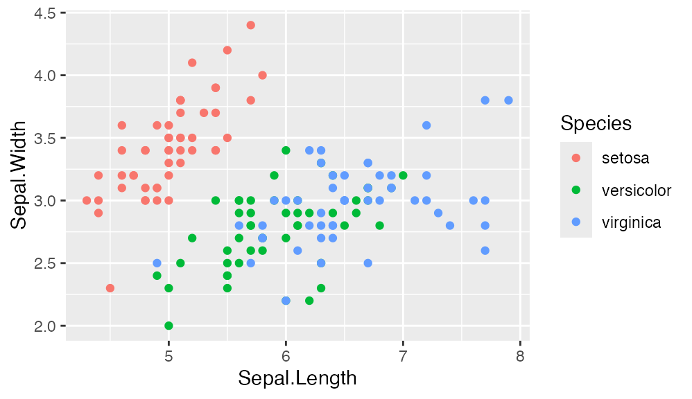
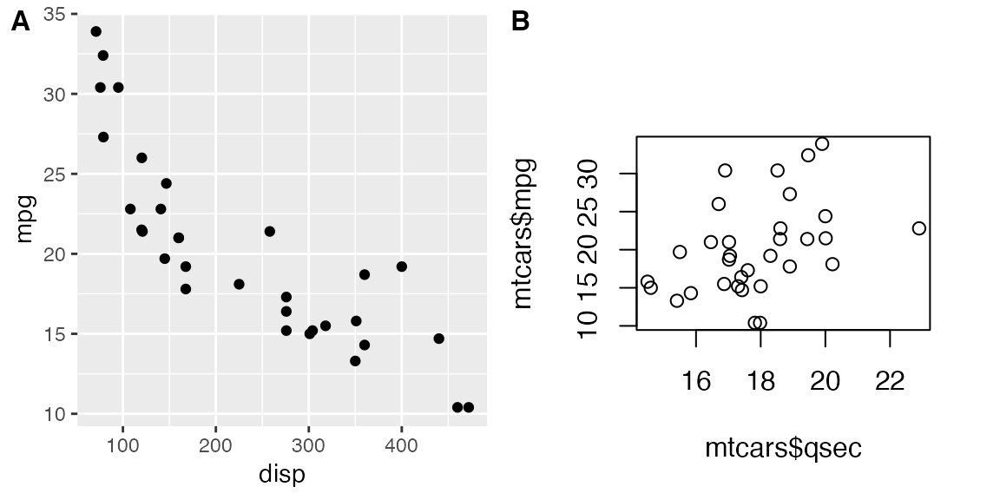

Introduction to cowplot
Claus O. Wilke
2018-12-27
Source:vignettes/introduction.Rmd
introduction.RmdThe cowplot package is a simple add-on to ggplot. It is meant to provide a publication-ready theme for ggplot, one that requires a minimum amount of fiddling with sizes of axis labels, plot backgrounds, etc. Its primary purpose is to give my students and postdocs an easy way to make figures that I will approve of. Thus, this package meets my personal needs and tastes. Yours may be different.
In addition to providing a modified plot theme, this package also offers functionality for custom annotations to ggplot plots. It turns out that the easiest way to offer this functionality was to implement a general-purpose drawing canvas on top of ggplot. As a result, you can achieve quite unusual effects with this package (see more below).
The cowplot source code is available on github: https://github.com/wilkelab/cowplot
Plot design
I don’t find the default ggplot design particularly elegant. In particular, I don’t like the gray background grid. I feel it often distracts from the data. For example, see this ggplot visualization of the mpg data set:

I prefer a clean and sparse layout for publication. I also prefer the approach of building a graph by adding elements rather than taking them away. Therefore, the default design of cowplot has no grid at all. It looks similar to ggplot’s theme_classic(), but there are a few important but subtle differences, mostly with respect to font sizes.
library(cowplot)
ggplot(mpg, aes(x = cty, y = hwy, colour = factor(cyl))) +
geom_point(size = 2.5) + theme_cowplot()
Note: As of version 1.0, the cowplot package does not modify the default ggplot2 theme anymore. To recover the old behavior of a modified default theme, add theme_set(theme_cowplot()) to the beginning of your code, right after loading the cowplot package.
The cowplot default theme works nicely in conjunction with the save_plot() function the package provides, such that the output pdfs are nicely formatted and scaled and don’t require any additional parameter fiddling:
plot.mpg <- ggplot(mpg, aes(x = cty, y = hwy, colour = factor(cyl))) +
geom_point(size=2.5) + theme_cowplot()
# use save_plot() instead of ggsave() when using cowplot for improved defaults
save_plot("mpg.png", plot.mpg)The resulting figure:

By default, cowplot disables grid lines on the plot. In many cases, this is the cleanest and most elegant way to display the data. However, sometimes gridlines may be useful, and thus cowplot provides a simple way of adding gridlines, via the function background_grid():

While the same result could be obtained using the function theme(), the function background_grid() makes the most commonly used option easily accessible. See the reference documentation for details.
There are a few other themes that cowplot defines, including a minimal grid theme, a theme with only horizontal and only vertical grid lines, and a theme without any grids or axes. All themes are coordinated so they work well with each other and with save_plot().
plot_grid(
plot.mpg + theme_minimal_grid(12) + ggtitle("theme_minimal_grid()"),
plot.mpg + theme_minimal_hgrid(12) + ggtitle("theme_minimal_hgrid()"),
plot.mpg + theme_minimal_vgrid(12) + ggtitle("theme_minimal_vgrid()"),
plot.mpg + theme_map(12) + ggtitle("theme_map()"), align = "hv"
)
Arranging graphs into a grid
One limitation of ggplot is that it doesn’t make it easy to add labels and other annotations to a plot. ggplot strictly separates the plot panel (the part inside the axes) from the rest of the plot, and while it’s generally straightforward to modify one or the other we cannot easily change both. To solve this issue in a generic way, cowplot implements a generic drawing layer on top of ggplot. In this drawing layer, you can add arbitrary graphical elements on top of a graph. This concept will be discussed in detail in the next section. For now, let’s discuss how this capability allows us to make nice compound plots.
The need for compound plots arises frequently when writing scientific publications. For example, let’s assume we have created the following two plots, and we would like to combine them into a two-part figure with parts A and B. In our case, the plots are the following:
plot.mpg <- ggplot(mpg, aes(x = cty, y = hwy, colour = factor(cyl))) +
geom_point(size=2.5) + theme_cowplot()
plot.mpg
plot.diamonds <- ggplot(diamonds, aes(clarity, fill = cut)) + geom_bar() +
theme_cowplot() + theme(axis.text.x = element_text(angle=70, vjust=0.5, hjust = 0.9))
plot.diamonds
cowplot allows us to combine them into one graph via the function plot_grid():

By default, the plots are simply placed into the grid as they are, and so the axes are not aligned. If axis alignment is required, it can be switched on via the align option:

The function plot_grid() will attempt to achieve a reasonable layout of the plots provided. However, you can precisely manipulate the layout by specifying the number of rows or columns or both:


The function plot_grid() works nicely in combination with the function save_plot(), which can be told about the grid layout. For example, if we want to save a 2-by-2 figure, we might use this code:
plot2by2 <- plot_grid(plot.mpg, NULL, NULL, plot.diamonds,
labels=c("A", "B", "C", "D"), ncol = 2)
save_plot(
"plot2by2.png", plot2by2,
ncol = 2, # we're saving a grid plot of 2 columns
nrow = 2, # and 2 rows
base_asp = 1.35 # aspect ratio of 1.35 for individual figures in the grid
)The resulting figure: 
The advantage of saving figures in this way is that you can first develop the code for individual figures, and once each individual figure looks the way you want it to you can easily combine the figures into a grid. save_plot() will make sure to scale the overall figure size such that the individual figures look the way they do when saved individually (as long as they all have the same aspect ratio).
Generic plot annotations
Finally, let’s discuss how we can use cowplot to create more unusual plot designs. For example, let’s take the mpg image from the previous section, label it with an A in the top-left corner, and mark it as a draft:
ggdraw(plot.mpg) +
draw_plot_label("A", size = 14) +
draw_label("DRAFT!", angle = 45, size = 80, alpha = .2)
The function ggdraw() sets up the drawing layer, and functions that are meant to operate on this drawing layer all start with draw_. The resulting object is again a standard ggplot object, and you can do with it whatever you might do with a regular ggplot plot, such as save it with ggsave(). [However, as mentioned before, I recommend using save_plot() instead.]
In fact, because ggdraw() produces a standard ggplot object, we can draw on it with standard geoms if we want to. For example:
t <- (0:1000)/1000
spiral <- data.frame(x = .45+.55*t*cos(t*15), y = .55-.55*t*sin(t*15), t)
ggdraw(plot.mpg) +
geom_path(data = spiral, aes(x = x, y = y, colour = t), size = 6, alpha = .4)
I don’t know if this is useful in any way, but it shows the power of the approach.
Importantly, though, in all cases discussed so far, the main plot was below all other elements. Sometimes, you might want the plot on top. In this case, you can initialize an empty drawing canvas by calling ggdraw() without any parameters. You then place the plot by calling draw_plot(). Notice the difference in the two plots produced by the following code:
boxes <- data.frame(
x = sample((0:33)/40, 40, replace = TRUE),
y = sample((0:33)/40, 40, replace = TRUE)
)
# plot on top of annotations
ggdraw() +
geom_rect(data = boxes, aes(xmin = x, xmax = x + .15, ymin = y, ymax = y + .15),
colour = "gray60", fill = "gray80") +
draw_plot(plot.mpg) +
draw_label("Plot is on top of the grey boxes", x = 1, y = 1,
vjust = 1, hjust = 1, size = 10, fontface = 'bold')
# plot below annotations
ggdraw(plot.mpg) +
geom_rect(data = boxes, aes(xmin = x, xmax = x + .15, ymin = y, ymax = y + .15),
colour = "gray60", fill = "gray80") +
draw_label("Plot is underneath the grey boxes", x = 1, y = 1,
vjust = 1, hjust = 1, size = 10, fontface = 'bold')

Note that placing a plot on top of annotations only makes sense if the plot background is transparent. This is one of the main differences between theme_cowplot() and theme_classic(). If you tried the same example with theme_classic(), the gray boxes underneath the plot would not show.
The draw_plot() function also allows us to place graphs at arbitrary locations and at arbitrary sizes onto the canvas. This is useful for combining subplots into a layout that is not a simple grid, e.g. with an inset plotted inside a larger graph.
# plot.mpg and plot.diamonds were defined earlier
ggdraw() +
draw_plot(
plot.diamonds + theme(legend.justification = "bottom"),
0, 0, 1, 1
) +
draw_plot(
plot.mpg + scale_color_viridis_d() +
theme(legend.justification = "top", plot.background = element_rect(fill = "white")),
0.5, 0.54, 0.5, 0.4
) +
draw_plot_label(
c("A", "B"),
c(0, 0.5),
c(1, 0.94),
size = 15
)
We can also combine plots and images, using the function draw_image(). This function, which requires the magick package to be installed, can take images in many different formats and combine them with ggplot plots. For example, we can use an image as a plot background:
p <- ggplot(iris, aes(x = Sepal.Length, fill = Species)) +
geom_density(alpha = 0.7) +
scale_y_continuous(expand = c(0, 0)) +
theme_cowplot()
ggdraw() +
draw_image("http://jeroen.github.io/images/tiger.svg") +
draw_plot(p)## Warning: ImageMagick was built without librsvg which causes poor qualty of SVG rendering.
## For better results use image_read_svg() which uses the rsvg package.
We can also make a plot grid with a regular plot and an image:
## Warning: ImageMagick was built without librsvg which causes poor qualty of SVG rendering.
## For better results use image_read_svg() which uses the rsvg package.